조경기사 (2020-09-26 기출문제)
1과목: 조경사
1. 클로이스터 가든(Cloister Garden)에 대한 설명이 아닌 것은?
- 흉벽이 있는 중정
- 원로의 중심에는 커넬 배치
- 교회건물의 남쪽에 위치한 네모난 공지
- 두 개의 직교하는 원로에 의한 4분할
(정답률: 69%)

2. 다음 중 고대 로마의 주택 정원에서 나타나지 않은 것은?
- 메갈론(Megalon)
- 아트리움(Atrium)
- 페리스틸리움(Peristylium)
- 지스터스(Xystus)
(정답률: 83%)
3. 고려시대 경남 합천군의 홍류동 계곡에 위치한 정자로 전면 2칸, 측면 2칸의 팔작지분의 건물은?
- 거연정(居然亭)
- 초간정(草澗亭)
- 사륜정(四輪亭)
- 농산정(籠山亭)
(정답률: 44%)
4. 다음 중 소쇄원과 관련된 설명으로 틀린 것은?
- 소쇄원을 경관유형(임수형, 내륙형)으로 분류할 때 산지 내륙형에 해당된다.
- 정자 방의 위치에 따른 유형(중심, 편심, 분리, 배면) 구분 중 광풍각은 배면형에 해당된다.
- 구성요소 중 경물은 작은 못, 비구, 물방아, 유수구, 석가산, 긴 담이 등장한다.
- 소쇄원의 정원요소는 ‘소쇄원 48영시’에 잘 나타나 있다.
(정답률: 62%)
5. 다음 백제의 궁남지(궁남지)에 대한 설명으로 맞지 않은 것은?
- 사비궁 남쪽에 못(池)을 파고, 20여리 밖에서 물을 끌어들였다.
- 못 가운데에는 무산십이봉(巫山十二峰)을 상징하는 섬을 만들었다.
- 못(池) 주변에는 능수버들을 심었다.
- 634년(무왕 35년)에 조영하였다.
(정답률: 68%)
6. 서양도시에서 발생한 “광장”의 변천과정을 고대에서부터 순서대로 올바르게 나열한 것은?
- Agora → Forum → Squars → Piazza → Place
- Agora → Forum → Piazza → Place → Square
- Forum → Piazza → Agora → Place → Square
- Forum → Agora → Piazza → Place → Square
(정답률: 73%)
7. 프랑스에서 르 노트르(Le Notre)의 조경양식이 이탈리아와 다르게 발전한 가장 큰 요인은?
- 기온
- 역사성
- 국민성
- 지형
(정답률: 85%)
8. 프랑스에 있는 보르비콩트(Vaux-Le-Vicomte)원에 대한 설명으로 적합하지 않은 것은?
- 건축이 조경에 종속됨으로써 이전의 공간 계획과는 차이가 있다.
- 앙드레 르 노트르(Andre Le Notre)의 출세작이다.
- 강한 중심축선을 사용하여 공간을 하나로 조직화하고 있다.
- 앙드레 르 노트르가 조경을, 라퐁테느가 건축을, 몰리에르는 실내장식을 맡아 완성시켰다.
(정답률: 65%)
9. 하워드(Ebenezer Howard)의 전원도시 사상과 이념은 후에 현대 도시환경개념에 많은 영향을 미쳤다. 하워드의 전원도시 개념과 거리가 먼 것은?
- 도시인구를 3~5만 명 정도로 제한할 것
- 주민의 자유결합의 권리를 최대한으로 향유할 수 있을 것
- 중심도시와 주위를 둘러싼 전원도시와의 기능적 연관성 분석
- 세부적으로 물리적 계획이나 적정인구 규모에 관한 이론 제시
(정답률: 51%)
10. 조지 런던과 헨리 와이즈의 협력작품으로, 설계는 방사형의 소로와 중심축선의 강조를 통한 바로크적인 새로운 지면분할의 방식을 취하면서 프랑스 왕궁과 경쟁한 저명한 영국의 정원은?
- 스토우원
- 햄프턴 코트
- 에르메농빌르
- 말메종
(정답률: 69%)
11. 다음 설명하는 중국의 정원 유적은?
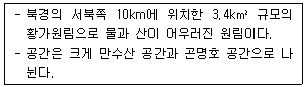
- 이화원
- 원명원
- 장춘원
- 졸정원
(정답률: 65%)
12. 서원에서 춘추제향시 제물로 쓰이는 짐승을 세워놓고 품평을 하기 위해 만든 곳은?
- 관세대(盥洗臺)
- 정료대(庭燎臺)
- 사대(社臺)
- 생단(牲壇)
(정답률: 73%)
13. 영양의 서석지(瑞石池)관련 설명이 틀린 것은?
- 정영방이 축조
- 지당은 중도가 없는 방지
- 대나무, 소나무, 국화, 매화의 사우단
- 대지 내 식물은 대부분 외부에서 옮겨 식재
(정답률: 60%)
14. 다음 설명에 적합한 통일신라의 유적은?
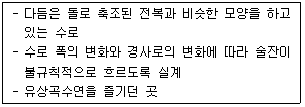
- 동지
- 안압지
- 포석정
- 태액지
(정답률: 79%)
15. 신라 의상대사의 “화엄일승법계도”에 근거하여 동심원적 공간구성체계로 조영된 사찰 명칭은?
- 양산 통도사
- 경주 불국사
- 순천 송광사
- 합천 해인사
(정답률: 50%)
16. 비뇰라(Vignola)가 설계한 것으로 몬탈토(Montalto)분수가 있는 정원은?
- 빌라 란테(Villa Lante)
- 빌라 에스테(Villa d’ Este)
- 빌라 마다마(Villa Madama)
- 빌라 감베라이아(Villa Gamberaia)
(정답률: 70%)
17. 범세계적인 뉴타운 건설 붐을 일으켰고 새로운 도시공간을 창조하는데 조경가의 적극적인 참여 계기가 된 것은?
- 전원도시론
- 도시미화운동
- 시카고 대박람회
- 그린스워드(Green sward)안
(정답률: 45%)
18. 다음의 빌라 중 로마의 하이드리아누스 빌라의 영감을 받아 “피로 리고리오”가 설계한 것은?
- 에스테 빌라
- 무티빌라
- 몬드라고네 빌라
- 알도브란디니 빌라
(정답률: 67%)
19. 다음 중 향원지(香遠池)가 있는 후원을 가지고 있는 궁은?
- 경복궁
- 창덕궁
- 창경궁
- 덕수궁
(정답률: 53%)
20. 다음 중 일본에서 가장 먼저 발생한 정원 양식은?
- 다정식(茶庭式)
- 축경식(縮景式)
- 회유임천식(回遊林泉式)
- 원주파 임천식(遠州派林泉式)
(정답률: 60%)
2과목: 조경계획
21. 「자연공원법」상 용도지구의 분류에 해당하지 않는 것은?
- 공원밀집마을지구
- 공원마을지구
- 공원자연환경지구
- 공원자연보존지구
(정답률: 68%)
22. 환경계획의 차원을 부문별 환경계획, 행정 및 정책구조, 사회기반형성으로 분류할 때 다음 중 사회기반형성 차원의 내용으로 가장 거리가 먼 것은?
- 소음방지
- 에너지계획
- 환경교육 및 환경감시
- 시민참여의 제도적 장치
(정답률: 55%)
23. Berlyne의 미적 반응과정을 순서대로 옳게 나열한 것은?
- 환경적 자극 → 자극선택 → 자극해석 → 자극탐구 → 반응
- 환경적 자극 → 자극탐구 → 자극해석 → 자극선택 → 반응
- 환경적 자극 → 자극선택 → 자극탐구 → 자극해석 → 반응
- 환경적 자극 → 자극탐구 → 자극선택 → 자극해석 → 반응
(정답률: 56%)
24. 다음 중 개인적 공간 및 개인적 거리에 대한 설명으로 옳지 않은 것은?
- 위협을 느낄 때 개인적 거리는 좁아질 수 있다.
- 홀(Hall)은 친밀한 거리, 개인적 거리, 사회적 거리, 공적 거리 등으로 세분하였다.
- 개인적 공간은 방어 기능 및 정보교환 기능의 2가지 측면에서 설명될 수 있다.
- 온순한 수감자보다 난폭한 수감자에 대해서 개인적 공간이 더 크게 설정되는 경향이 있다.
(정답률: 61%)
25. 경관조명시설의 계획·설계 시 고려해야 할 사항으로 가장 거리가 먼 것은?
- 경관조명시설은 야간 이용 시 안전과 방범을 확보하도록 효과적으로 배치한다.
- 안전성, 기능성, 쾌적성, 조형성, 유지관리 등을 충분히 고려하여 계획한다.
- 계단이나 기복이 있는 곳에는 안전한 보행을 위하여 간접 조명방식을 계획한다.
- 정원등의 광원은 이용자의 눈에 띄지 않는 곳에 배치한다.
(정답률: 57%)
26. 시설물의 배치 계획으로 가장 거리가 먼 것은?
- 시설물의 형태, 재료, 색채는 주변경관과 조화를 이루도록 한다.
- 구조물의 배치는 전체적인 패턴이 일정한 질서를 갖도록 한다.
- 구조물의 평면이 장방형인 경우 짧은 변이 등고선에 평행하도록 배치 계획한다.
- 여러 기능이 공존할 경우 집단별로 배치 계획한다.
(정답률: 74%)
27. 일반적인 조경계획의 과정으로 가장 적합한 것은?
- 분석 → 기본전제 → 기본계획 → 설계
- 기본전제 → 분석 → 설계 → 기본계획
- 분석 → 기본전제 → 설계 → 기본계획
- 기본전제 → 분석 → 기본계획 → 설계
(정답률: 66%)
28. 휴양림 지역 내 진입(進入)도로의 종점(終點)에 설치된 주차장으로부터 휴양림의 주요시설 입구를 순환, 연결하는 기능을 담당하는 도로를 가리키는 용어는?
- 임도
- 목도
- 벌도
- 녹도
(정답률: 70%)
29. 다음 중 공원의 최대일(最大日)이용객 수 산정 방법으로 옳은 것은?
- 연간 이용객수 ÷ 365
- 연간 이용객수 × 최대일율
- 연간 이용객수 × 서비스율
- 연간 이용객수 × 회전율 × 최대일율
(정답률: 67%)
30. 설문지(questionnaire)작성 시 폐쇄형 질문의 장점에 해당되지 않는 것은?
- 민감한 주제에 보다 적합하다.
- 부호화와 분석이 용이하여 시간과 경비를 절약할 수 있다.
- 설문지에 열거하기에는 응답의 범주가 너무 클 경우에 사용하면 좋다.
- 질문에 대한 대답이 표준화되어 있기 때문에 비교가 가능하다.
(정답률: 45%)
31. 도시지역과 그 주변지역의 무질서한 시가화를 방지하고 계획적·단계적인 개발을 도모하기 위하여 대통령령으로 정하는 일정기간동안 시가화를 유보할 필요가 있다고 인정하여 지정하는 구역은?
- 시가화유보구역
- 시가화관리구역
- 시가화조정구역
- 시가화예정구역
(정답률: 44%)
32. 집수(集水)구역을 결정하는 가장 중요한 요소는?
- 식생
- 지형
- 경관
- 강우량
(정답률: 63%)
33. 도시공원 중 묘지공원의 경우 적당한 공원 면적의 규모 기준은? (단, 정숙한 장소로 장래 시가화가 예상되지 아니하는 자연녹지지역에 설치한다.)
- 100,000m2
- 300,000m2
- 500,000m2
- 700,000m2
(정답률: 56%)
34. 계획안을 작성할 때 주어진 시간 및 비용의 범위 내에서 얻을 수 있는 최선의 안(案)을 가리키는 것은?
- 최적 안(Optimal Solution)
- 창조적인 안(Creative Solution)
- 규범적인 안(Normative Solution)
- 만족스러운 안(Satisficing Solution)
(정답률: 60%)
35. 도시 및 지역차원의 환경계획으로 생태네트워크의 개념에 해당되지 않는 것은?
- 공간계획이나 물리적 계획을 위한 모델링 도구이다.
- 기본적으로 개별적인 서식처와 생물종의 보전을 목표로 한다.
- 지역적 맥락에서 보전가치가 있는 서식처와 생물종의 보전을 목적으로 한다.
- 전체적인 맥락이나 구조측면에서 어떻게 생물종과 서식처를 보전할 것인가에 중점을 둔다.
(정답률: 41%)
36. 「국토의 계획 및 이용에 관한 법률」 시행령에 따라 국토교통부장관이 도시·관리계획 결정으로 용도지역 중 “녹지지역”을 세분할 때의 분류 형태에 해당되지 않는 것은?
- 보전녹지지역
- 전용녹지지역
- 생산녹지지역
- 자연녹지지역
(정답률: 60%)
37. 골프장 계획 시 구성 요소 중 홀의 처음 샷을 해서 출발하는 곳으로 주변보다 약간 높으며, 사각형 혹은 원형인 곳을 무엇이라 하는가?
- 그린(Green)
- 러프(Rough)
- 벙커(Bunker)
- 티잉그라운드(Teeing ground)
(정답률: 63%)
38. 자연형성 요소의 상호 관련성은 ‘매우 밀접한’, ‘밀접한’, ‘간접적인’으로 관계가 분류된다. 다음 중 ‘매우 밀접한 관계’를 가지는 요소들의 조합은?
- 지형 - 기후
- 지질 - 기후
- 지질 - 식생
- 토양 – 야생동물
(정답률: 54%)
39. 도시지역 안에서 도시자연경관의 보호와 시민의 건강·휴양 및 정서생활을 향상시키는 데에 기여하기 위하여 도시관리계획 수립 절차에 의해 조성되는 공원의 유형으로 가장 거리가 먼 것은?
- 근린공원
- 자연공원
- 묘지공원
- 어린이공원
(정답률: 42%)
40. 만조 때 수위선과 지면의 경계선으로부터 간조 때 수위선과 지면이 접하는 경계선까지의 지역을 지칭하는 용어는?
- 비오톱
- 습지훼손
- 연안습지
- 유비쿼터스
(정답률: 64%)
3과목: 조경설계
41. 직육면체의 직각으로 만나는 3개의 모서리가 모두 120°를 이루는 투상도는?
- 사투상도
- 정투상도
- 등각투상도
- 부등각투상도
(정답률: 66%)
42. 도면에서 치수의 표시와 기입방법이 틀린 것은?
- 전체의 치수는 가장 바깥에 나타낸다.
- 치수선과 치수는 도형 안에 나타내지 않는다.
- 한 도면에서 치수선의 굵기는 동일하게 한다.
- 치수선은 외형선이나 중심선을 대신해서 사용하지 않는다.
(정답률: 56%)
43. 야외공연장(야외무대 및 스탠드)의 설계기준으로 틀린 것은? (단, 조경설계기준을 적용한다.)
- 객석의 전후영역은 표정이나 세밀한 몸짓을 감상할 수 있는 15cm 이내로 한다.
- 평면적으로는 무대가 보이는 각도(객석의 좌우영역)는 90° 이내로 설정한다.
- 객석에서의 부각은 15° 이하가 바람직하며 최대 30°까지 허용된다.
- 객석의 바닥기울기는 후열객의 무대방향 시선이 전열객의 머리끝 위로 가도록 결정한다.
(정답률: 56%)
44. 다음 중 설계도의 종류에 속하지 않는 것은?
- 구상도(diagram)
- 단면도(section)
- 입면도(elevation)
- 조감도(birds-eye view)
(정답률: 60%)
45. 디자인 요소 중 조경에 표현되는 면적인 요소와 가장 거리가 먼 것은?
- 호수면
- district
- 수목의 군식
- node
(정답률: 63%)
46. 조경용 제도용지 중 A2용지의 표준 규격은?
- 297mm × 420mm
- 420mm × 594mm
- 594mm × 841mm
- 841mm × 1189mm
(정답률: 66%)
47. 한국의 오방색(五方色)과 방향의 연결 중 “동쪽”에 해당하는 색상은?
- 백색
- 적색
- 청색
- 황색
(정답률: 67%)
48. 먼셀의 색입체 관련 설명으로 틀린 것은?
- 수직축은 맨 위에 명도가 가장 높은 하양을 배치한다.
- 색입체는 전 세계적으로 가장 널리 쓰이는 혼색계 체계이다.
- 색상 배열시 보색관계를 중시하여 파랑과 자주가 감각적으로 균등하지 못하다.
- 색입체의 직도 부근인 원에는 중간 밝기의 색상을 배열한 색상환을 만든다.
(정답률: 34%)
49. K. Lynch가 도시경관 분석에 사용한 도시구성 요소에 해당하는 것은?
- District
- Form
- Building
- Road
(정답률: 64%)
50. 다음 중 조형예술 측면에서 최초의 요소로 규정지을 수 있고, 기하학 측면에서 위치를 결정하는 것은?
- 면
- 선
- 점
- 입체
(정답률: 61%)
51. 다음 중 통경선(vista)의 예로 볼 수 없는 것은?
- 창문을 통해 보이는 바깥 경치
- 경회루 석주 사이로 보이는 수면
- 숲 속 나무 사이로 보이는 경치
- 옥상 전망대에서 보이는 경치
(정답률: 66%)
52. 제도 시 사용하는 선의 종류 중 1점쇄선을 사용하는 경우에 해당되는 것은?
- 외형선
- 치수선
- 치수보조선
- 중심선
(정답률: 60%)
53. 고속도로 식재 설계 중 “사고방지기능”의 식재에 해당되지 않는 것은?
- 완충식재
- 차폐식재
- 차광식재
- 명암순응식재
(정답률: 63%)
54. 경사지에 휴게소를 설계하고자 한다. 절·성토 면에 대한 지형설계를 하여 이용자들에게 편리한 공간을 조성하고자 도면을 작성하려 할 때, 다음 중 잘못된 것은?
- 계획이나 설계를 하기 위해 기존의 등고선을 실선으로 그리고, 기본 지형도를 만들며, 변경된 등고선은 파선으로 그린다.
- 경사도 조작에 있어 일반토사의 성토는 1:2, 절토는 1:1의 경사를 유지한다.
- 배수를 고려하기 위해 잔디로 마감할 경우 1%, 인공적인 재료로 마감할 경우 0.5~1%의 경사를 최소한 유지하도록 한다.
- 동선을 위한 경사면을 조작할 경우 이용자들의 양과 속도의 관점에서 계획하며 장애인을 위한 동선일 경우 일반인보다 구배를 완만히 유지하도록 한다.
(정답률: 60%)
55. 도시 내 콘크리트 하천을 자연형 하천으로 복원하는 설계를 계획하고자 할 때의 설명으로 가장 부적합한 것은?
- 흐르는 하천의 가운데에 섬을 조성하여 서식환경을 다양하게 만든다.
- 안정된 서식환경이 조성될 수 있도록 급류나 웅덩이가 조성되지 않도록 한다.
- 수심에 맞는 식물을 선정하여 식재하고, 수변·수중생물의 서식환경을 조성해준다.
- 직선 수로를 곡선화하여 자연하천의 흐름과 유사하게 만들어 하천의 자정기능을 높인다.
(정답률: 54%)
56. 관찰자가 느끼는 폐쇄성은 관찰자의 위치에서 수직면까지의 거리에 관계되며 건물 높이(H), 관찰자와 건물의 거리(D)라 할 때, 폐쇄감을 완전히 상실하기 시작하는 시점(H:D)은? (단, P.D. Spreiregen의 이론을 적용한다.)
- 1 : 2
- 1 : 3
- 1 : 4
- 1 : 5
(정답률: 58%)
57. 비례(比例)에 대한 설명 중 적합하지 않은 것은?
- 치수의 계획적인 관계이다.
- 가장 친근하고 구체적인 구성 형식이다.
- 모든 단위의 크기와 대소의 상대적인 비교이다.
- 황금비(黃金比)는 동서고금을 통해 절대적인 유일한 비례 기준으로 적용된다.
(정답률: 57%)
58. 인공지반식재기간 조성과 관련된 설명이 옳지 않은 것은?
- 건축 및 토목구조물 등의 불투수층 구조물위에 조성되는 식재지반을 인공지반이라 한다.
- 버드나무, 아까시나무 등은 바람에 쓰러지거나 줄기가 꺾어지기 쉬우므로 설계 시 고려한다.
- 인공지반의 건조현상을 방지하기 위해 토성적으로 보수성이 좋은 토양재료를 사용한다.
- 인공지반조경의 옥상조경에서, 옥상면의 배수구배는 최대 1.0% 이하로, 배수구 부분의 배수구배는 최대 1.5% 이하로 설치한다.
(정답률: 54%)
59. 그림과 같은 입체도에서 화살표 방향이 정면일 때 평면도로 가장 적합한 것은?
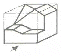
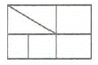
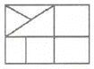
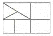
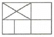
(정답률: 54%)
60. 장애인등의 통행이 가능한 계단의 설계기준에 맞는 것은? (단, 장애인·노인·임산부 등의 편의증진 보장에 관한 법률 시행규칙을 적용한다.)
- 계단에는 챌면을 설치하지 아니할 수 있다.
- 계단은 직선 또는 꺾임형태로 설치할 수 있다.
- 계단 및 참의 유효폭은 0.8미터 이상으로 하여야 한다.
- 계단은 바닥면으로부터 높이 2.4미터 이내마다 휴식을 할 수 있도록 수평면으로 된 참을 설치할 수 있다.
(정답률: 42%)
4과목: 조경식재
61. 느티나무(Zelkova serrata Nakino)의 특징에 대한 설명이 틀린 것은?
- 독립수 및 분재료 활동된다.
- 꽃은 일가화로 5월에 잎과 함께 핀다.
- ‘serrata’은 삼각상 첨부모양을 뜻한다.
- 수피는 짙은 회색으로 갈라지지 않고 오래되면 비늘조각으로 떨어진다.
(정답률: 49%)
62. 방화용(防火用)으로 적합하지 않은 수종은?
- 소나무
- 가시나무
- 후박나무
- 동백나무
(정답률: 62%)
63. 백합나무(Liriodendron tulipifera)의 특징으로 틀린 것은?
- 실생 번식률이 좋아 가을에 결실하는 열매를 파종한다.
- 양지에서 잘 자라고 내건성과 내공해성은 강하다.
- 꽃은 5~6월에 피며 녹황색이고 가지 끝에 튤립 같은 꽃이 1송이씩 달린다.
- 병충해가 거의 없고 수명이 긴 편이며 내한성이 강하므로 우리나라 전역에 식재가 가능하다.
(정답률: 34%)
64. 식물의 질감은 잎의 크기, 모양, 시각, 촉각 등으로 특정지어지는데, 다음의 실내조경용 식물 중 잎의 크기가 가장 작아 고운 질감을 나타내는 수종은?
- 벤자민고무나무(Ficus benjamina)
- 행운목(Dracaena fragrans)
- 떡갈나무잎 고무나무(Ficus lyrata)
- 몬스테라(Monsters deliciosa)
(정답률: 52%)
65. 다음 중 조경과 관련된 용어의 설명이 틀린 것은?
- “자연지반”이라 함은 하부에 투수가능 시설물이 포함되어 있거나 자연상태의 지층 그대로인 지반으로 공기, 물, 생물 등의 인공 순환이 가능한 지반을 말한다.
- “식재”라 함은 조경면적에 수목이나 잔디·초화류 등의 식물을 배치하여 심는 것을 말한다.
- “조경면적”이라 함은 조경기준에서 정하고 있는 조경의 조치를 한 부분의 면적을 말한다.
- “옥상조경”이라 함은 인공지반조경 중 지표면에서 높이가 2미터 이상인 곳에 설치한 조경을 말한다.(다만, 발코니에 설치하는 화훼시설은 제외한다.)
(정답률: 59%)
66. 다음 중 가시가 없는 수종은?
- Forsythia koreana
- Berberis koreana
- Kalopanax pictus
- Acanthopanax sieboldianum
(정답률: 49%)
67. 우리나라에 자생하는 후박나무의 학명은?
- Magnolia liliiflora
- Magnolia obovate
- Magnolia grandiflora
- Machilus thunbergii
(정답률: 44%)
68. 식생에 대한 인간의 영향을 설명한 것으로 옳지 않은 것은?
- 인간에 의해 영향을 받기 이전의 식생을 원식생(原植生)이라 한다.
- 인간에 의해 영향을 받지 않고 자연 상태 그대로의 식생을 자연 식생이라 한다.
- 인간에 의한 영향을 받음으로써 대치 된 식생을 보상 식생이라 한다.
- 인간의 영향이 제거되었을 때 성립할 수 있는 자연 식생을 잠재 자연 식생이라 한다.
(정답률: 65%)
69. 정수식물(emerged plant)이 아닌 것은?
- 물질경이
- 애기부들
- 세모고랭이
- 매자기
(정답률: 39%)
70. 생태적 도시를 설계하는데 고려해야 할 기본 원리로 옳지 않은 것은?
- 한 가지 토지 이용 패턴이 지속되어 온 공간을 우선적으로 보호한다.
- 토지 이용 시 전체 토지에 대한 균일한 이용성을 갖도록 하는 것이 바람직하다.
- 동·식물 개체군의 고립 효과를 줄이기 위하여 추가적인 녹지 공간 확보를 통하여 연결성을 증대시킨다.
- 고밀도 개발 지역에서는 벽면녹화 및 옥상 녹화를 통하여 동·식물 서식공간으로 조성하여 이를 기능적으로 연결한다.
(정답률: 30%)
71. 우리나라 서울 인근지역에서 교목-소교목(아교목)-관목의 순으로 식재를 할 경우 식재 가능한 수종으로 가장 잘 짝지어진 것은?
- 수수꽃다리 – 때죽나무 - 조팝나무
- 느티나무 – 화살나무 - 철쭉
- 단풍나무 – 붉나무 - 귀룽나무
- 신갈나무 – 산사나무 – 생강나무
(정답률: 38%)
72. 잔디관리 작업 중 토양의 단립(單粒)구조를 입단(粒團)구조로 바꾸기 위한 작업으로 가장 적합한 것은?
- 잔디깎기
- 시비작업
- 관수작업
- 통기작업
(정답률: 56%)
73. 잎 종류와 수종의 연결이 옳지 않은 것은?
- 3출엽 : 복자기
- 5출엽 : 으름덩굴
- 단엽 : 중국단풍
- 기수1회우상복엽 : 피나무
(정답률: 40%)
74. 옥상 녹화용 경량토 중 다음과 같은 특징이 있는 것은?
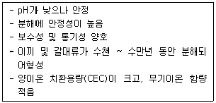
- 화산모래
- 피트모스
- 펄라이트
- 질석(버미큘라이트)
(정답률: 53%)
75. 다음 ( )에 들어갈 적합한 용어는?
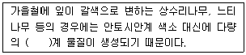
- 타닌(tannin)
- 크산토필(xanthothyll)
- 카로티노이드(carotinoid)
- 크리산테민(chrysanthemin)
(정답률: 57%)
76. 조경 식물의 일반적인 선정 기준과 가장 거리가 먼 것은?
- 이식과 관리가 용이한 식물
- 희소하여 경제성이 높은 식물
- 미적, 실용적 가치가 있는 식물
- 식재지역 환경에 적응력이 큰 식물
(정답률: 73%)
77. 늦가을부터 초겨울까지 도시의 광장이나 가로변의 플랜티나 화분에 적당한 식물은?
- 과꽃
- 꽃양배추
- 분꽃
- 제라늄
(정답률: 63%)
78. Berberis속에 관한 설명으로 틀린 것은?
- 수형, 열매, 단풍을 감상함
- 생울타리로 활용 가능함
- 산성토양을 좋아함
- 해충이 별로 없음
(정답률: 41%)
79. 식물 생육을 저해하는 토양 환경압의 요인에 해당되지 않는 것은?
- 토양의 과습 또는 과다 건조
- 토양의 입단화 및 낮은 토양경도
- 유효토층의 부족과 토양공기의 부족
- 식물양분의 결핍과 유해물질의 존재
(정답률: 49%)
80. 단조롭고 지루한 경관을 질감, 식재, 형태 등의 요소를 통해 시각적인 변화를 유도하는 식재 기법은?
- 강조식재
- 군집식재
- 차폐식재
- 배경식재
(정답률: 68%)
5과목: 조경시공구조학
81. 합성수지는 열가소성, 열경화성, 탄성종합체로 분류된다. 다음 중 탄성중합체에 해당되는 것은?
- 폴리에틸렌수지
- 에폭시수지
- 클로로프렌 고무
- 페놀수지
(정답률: 47%)
82. 골재에 대한 설명으로 틀린 것은?
- 골재란 모래, 자갈, 깬 자갈, 부순 자갈, 기타 이와 유사한 재료의 총칭이다.
- 바다 자갈의 염분함량은 절대건조증량의 1%이하이면 부식의 우려가 없다.
- 재료에 따라 천연골재와 인공골재로 나눈다.
- 중량에 따라 보통골재, 경량골재, 중량골재로 나눈다.
(정답률: 63%)
83. 직접노무비에 대한 설명으로 적합한 것은?
- 공사현장 사무소에서 근무하는 직원에 대한 임금
- 공사현장에서 직접작업에 종사하는 노무자에게 지급하는 임금
- 작업현장에서 보조적인 작업에 종사하는 노무자에 대한 임금
- 본사에서 근무하는 직원에 대한 임금
(정답률: 66%)
84. 각종 조경용 재료의 일반사항에 대한 설명 중 틀린 것은?
- 석재는 휨강도가 약하므로 들보나 가로대의 재료로는 채택하지 않는다.
- 와이어 메시 보강의 주목적은 콘크리트의 압축강도를 높이기 위해서이다.
- 구조체에 사용하는 석재는 압축강도 49MPa이상, 흡수율 5% 이하이어야 한다.
- 콘크리트 및 모르타르 등의 무기질계 소재의 도장은 함수율 9% 이하, pH 9 이하가 되어야 한다.
(정답률: 38%)
85. 다음 도로설계와 관련된 설명의 ( )에 적핪하지 않은 것은?
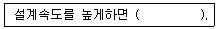
- 차도의 폭원이 넓다.
- 곡선반경이 커진다.
- 완경사 도로가 된다.
- 건설비가 적게 든다.
(정답률: 64%)
86. 종단구배가 변하는 곳에서 사고의 위험 및 차량성능 저하 등의 문제를 예방하기 위하여 설계 시 주의해야 할 사항으로 가장 거리가 먼 것은?
- 종단선형은 지형에 적합하여야 하며, 짧은 구간에서 오르내림이 많지 않도록 한다.
- 길이가 긴 경사 구간에는 상향경사가 끝나는 정상 부근에 완만한 기울기의 구간을 둔다.
- 같은 방향으로 굴곡하는 두 종단곡선 사이에 짧은 직선구간을 반드시 두도록 한다.
- 교량이 있는 곳 전방에는 종단구배를 주지 않도록 한다.
(정답률: 49%)
87. 재료의 성질에 대한 설명으로 옳은 것은?
- 탄성은 재료에 작용하는 외력이 어느 한도에 이르러 외력의 증가 없이도 변형이 증대하는 성질을 말한다.
- 강성은 재료의 단단한 정도로서 마감재의 내마모성 등에 영향을 끼치는 요인이 된다.
- 인성은 재료가 외력으로 변형을 일으키면서도 파괴되지 않고 견딜 수 있는 성질이다.
- 연성은 재료가 압력이나 타격에 의하여 파괴 없이 판상으로 펼쳐지는 성질이다.
(정답률: 41%)
88. 조명시설의 용어 중 단위 면에 수직으로 투하된 광속밀도를 가리키는 용어는?
- 배광곡선
- 휘도(brightness)
- 조도(illumination)
- 광도(luminous intensity)
(정답률: 54%)
89. 절·성토 공사구간에서 5000m3의 성토량이 필요하다. 절토 할 자연상태의 토량은 얼마인가? (단, L=1.1, C=0.8이다.)
- 4000m3
- 5500m3
- 6250m3
- 7500m3
(정답률: 43%)
90. 목재를 방부처리 하는 방법으로 가장 거리가 먼 것은?
- 표면탄화법
- 약제도포법
- 관입법
- 약제주입법
(정답률: 54%)
91. 다음 설명에 해당하는 공사 계약방식은?
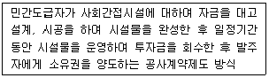
- B.O.T(Build-Operate-Transfer)
- C.M(Construction Management)
- E.C(Engineering Construction)
- 파트너링(Partnering) 방식
(정답률: 56%)
92. 아스팔트 및 콘트리트 포장 시 부등침하나 온도변화로 수축, 팽창에 의한 파손을 막기 위해 일정 간격으로 설치하여야 하는 것은?
- 줄눈
- 맹암거
- 암거
- 물빼기공
(정답률: 59%)
93. 다음 돌쌓기의 설명 중 틀린 것은?
- 찰쌓기의 물빼기 구멍의 배치는 서로 어긋나게 하고, 2~3m2간격마다 1개소를 계획하는 것을 표준으로 한다.
- 메쌓기는 뒷채움 등에 콘크리트를 사용하고 줄눈에 모르타르를 사용하는 것을 말한다.
- 메쌓기는 규격이 일정한 석재의 켜쌓기(수평축)를 원칙으로 한다.
- 높은 돌쌓기는 밑으로 내려옴에 따라 뒷길이를 길게 하는 것이 원칙이다.
(정답률: 50%)
94. 시방서(specification)에 대한 설명 중 틀린 것은?
- 사용재료의 품질, 규격 조건, 시공방법, 완성 후의 마감 등이 수록된다.
- 일반시방서와 특별시방서, 설계설명서로 구분된다.
- 공사의 수행과 관리방법에 대해 계약자에게 내용을 알려준다.
- 설계자는 시방서를 통하여 시공방법을 구체적으로 기술하여야 한다.
(정답률: 50%)
95. 다음 그림과 같은 단순보에서 하중 P의 값으로 옳은 것은?
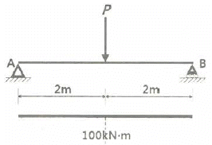
- 50kN
- 100kN
- 150kN
- 200kN
(정답률: 41%)
96. 다음 등고선에 관한 설명 중 옳지 않은 것은?
- 지표면의 경사가 같을 때는 등고선의 간격은 같고 평행하다.
- 등고선은 동굴이나 낭떠러지 이외에는 서로 겹치지 않는다.
- 등고선은 급경사지에서는 간격이 넓어지며, 완경사지에서는 간격이 좁아진다.
- 등고선 간의 최단거리 방향은 최급경사 방향을 나타낸다.
(정답률: 65%)
97. 다음과 같은 지형의 기반에 성토하였을 때 포화 점토사면의 파괴에 대한 안전율은 얼마인가? (단, 토양의 포화 단위중량은 2.0ft/m3, ø=0, 흙의 전단강도정수 C=6.5tf/m2, 안정계수 Ns=5.55이다.)
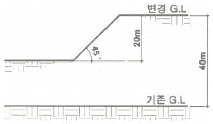
- 0.4509
- 0.9018
- 1.2525
- 1.9018
(정답률: 37%)
98. 다음 중 소운반 및 인력운반 공사에 대한 표준품셈 관련 설명으로 틀린 것은? (단, V: 평균왕복속도, T: 1일 실작업시간, L: 운반거리, t: 적재적하 시간)
- 1일 운반 실작업시간은 8시간을 기준으로 480분을 적용한다.
- 지게운반의 1회 운반량은 보통토사의 경우 25kg을 기준으로 산정한다.
- 1일 운반횟수를 구하는 식은
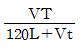
이다. - 지게운반 경로가 고갯길인 경우에는 수직높이 1m는 수평거리 6m의 비율로 적용한다.
(정답률: 48%)
99. 살수 관개시설 설치 시 고려할 사항으로 가장 거리가 먼 것은?
- 관수량과 급수원의 흐름과 작동압력에 의해 살수기를 선정한다.
- 살수기의 간격은 보통 살수작동 지름의 60~65%로 추정한다.
- 살수구역에서 첫 번쨰와 마지막 살수기에 작동하는 압력의 차는 10%이내이어야 한다.
- 살수기의 배치는 정사각형의 배치가 정삼각형의 배치보다 균등한 살수를 한다.
(정답률: 56%)
100. 콘크리트의 워커빌리티(workability)를 알아보기 위한 시험방법이 아닌 것은?
- 플로우테스트
- 표준관입시험
- 슬럼프테스트
- 다짐계수시험
(정답률: 41%)
6과목: 조경관리론
101. 다음 중 유기물 시용의 효과에 해당되지 않는 것은?
- 토양 온도를 낮춤
- 토양의 구조 개량
- 토양 중의 양분 저장
- 토양의 완충작용을 증진
(정답률: 57%)
102. 재료별 유회시설의 관리에 대한 설명으로 옳지 않은 것은?
- 목재시설 기초부분은 조기에 부패하기 쉬우므로 항상 점검하며, 상태가 불량한 부분은 교체하거나 콘크리트 두르기 등의 보수를 한다.
- 철재시설은 회전부분의 축부에 기름이 떨어지면 동요나 잡음이 생기지만 계속 사용하면 마모되어 소음이 줄어든다.
- 콘크리트시설은 콘크리트 기초가 노출되면 위험하므로 성토, 모래 채움 등의 보수를 한다.
- 합성수지시설에 벌어진 금이 생긴 경우에는 보수가 곤란하고, 이용자가 상처를 입기 쉬우므로 전면 교체한다.
(정답률: 61%)
103. 토양의 형태론적 분류체계 단위의 순서가 옳은 것은?
- 목 → 아목 → 대군 → 아군 → 계 → 통
- 목 → 아목 → 대토양군 → 계 → 통 → 구
- 목 → 대토양군 → 아목 → 통 → 계
- 목 → 대군 → 아군 → 아목 → 계 → 통
(정답률: 51%)
104. 대규모 녹지공간의 풀베기를 위한 일반적인 동력예취기 사용 시 안전사항으로 거리가 먼 것은?
- 예취 작업할 곳에 빈병이나, 깡통, 돌 등 위험요인을 제거한다.
- 예취 칼날이 있는 동력예취기 작업 시 왼쪽에서 오른쪽 방향으로 작업한다.
- 예취 칼날 교체를 위한 해체 시 볼트를 오른쪽에서 왼쪽 방향으로 돌린다.
- 예취작업 시에는 안전모, 보호안경, 무릎보호대, 안전화 등 보호구를 착용한다.
(정답률: 54%)
1⑤. 다음 [보기]에서 설명하는 해충은?
- 도토리거위벌레
- 솔껍질깍지벌레
- 참나무재주나방
- 호두나무잎벌레
(정답률: 55%)
106. 어떤 물질이 농약으로 사용되기 위하여 구비하여야 할 조건으로 가장 거리가 먼 것은?
- 살포시 수목에 대한 약해가 없어야 한다.
- 병해충을 방제하는 약효가 뛰어나야 한다.
- 수목재배 전체기간 중 잔효성이 유지되어야 한다.
- 사용하는 작업자에 대하여 독성이 낮아야 한다.
(정답률: 60%)
107. 나무의 정지, 전정 요령으로 가장 거리가 먼 것은?
- 도장한 가지는 제거한다.
- 병충해의 피해를 입은 가지는 제거한다.
- 얽힌 가지와 교차한 가지는 제거한다.
- 같은 부위, 같은 방향으로 평행한 두 가지 모두 제거한다.
(정답률: 63%)
108. 배수시설의 관리에 의한 효용으로 가장 거리가 먼 것은?
- 강우 및 강설량의 조절
- 유속 및 유량감소로 토양침식방지
- 토양의 포화상태를 감소시켜 지내력 확보
- 해충의 번식원인이 될 수 있는 고여 있는 물을 제거
(정답률: 50%)
109. 병균이 식물체에 침투하는 것을 방지하기 위해 쓰이는 약제로, 예방을 목적으로 사용되며 약효시간이 긴 특징을 갖고 있는 것은?
- 토양살균제
- 직접살균제
- 종자소독제
- 보호살균제
(정답률: 49%)
110. 옥외레크리에이션 이용자 관리체계는 관리 프로그램적 측면과 이용자의 제특성에 대한 이해 부분으로 구분된다. 이 중 “이용자 관리 프로그램”에 속하는 것은?
- 참가 유형
- 이용의 분포
- 이용자 요구도 위계
- 이용자의 지각 특성
(정답률: 29%)
111. 화단의 비배관리에 효과적인 방법이 아닌 것은?
- 봄에 파종이나 이식이 끝난 후에 퇴비를 섞어준다.
- 복합비료 입제는 꽃을 식재하기 일주일 정도 전에 뿌려준다.
- 가을이나 겨울에 토성을 개량하기 위하여 퇴비를 넣고 땅을 일구어서 섞어 준다.
- 꽃을 피우기 시작할 때 액제의 비료를 잎이나 줄기기부에 일주일에 한 두 번씩 뿌려준다.
(정답률: 34%)
112. 식재공사 후 장기간의 가뭄으로부터 수목을 보호하기 위해 실시하는 관수(灌水)의 요령으로 가장 거리가 먼 것은?
- 물을 줄 때 수관폭의 1/3 정도 또는 뿌리분 크기보다 약간 넓게, 높이 0.1m 정도의 물받이를 만든다.
- 관수량은 물분(깊이 5~10cm)에 반 정도 차게 물을 붓는다.
- 거목의 경우에는 근부(根部)뿐만 아니라 줄기 전체에도 물을 끼얹어 준다.
- 매일 관수를 계속할 경우 하층에 뿌리가 부패하는 것을 주의한다.
(정답률: 41%)
113. 토양의 입경조성(粒經組成)과 가장 밀접한 관련이 있는 것은?
- 토성(土性)
- 토양통(土壤統)
- 토양의 구조(構造)
- 토양반응(土壤反應)
(정답률: 41%)
114. 생울타리의 관리 방법이 옳지 않은 것은?
- 맹아력이 약한 수종은 자주 강하게 다듬으면 잔가지 형성에 도움을 준다.
- 전정은 목적에 맞게 보통 1년에 2~3회 실시한다.
- 주요 수종은 쥐똥나무, 무궁화 등이 적합하다.
- 다듬는 시기는 새잎이 나올 때부터 6월 중순경까지와 9월이 적기이다.
(정답률: 56%)
115. 진딧물이나 깍지벌레 등이 기생하는 나무에서 흔히 관찰되는 수목병은?
- 그을음병
- 빗자루병
- 흰가루병
- 줄기마름병
(정답률: 40%)
116. 다음 설명은 어떤 양분이 결핍된 증상인가?
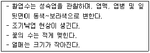
- Mg
- K
- N
- P
(정답률: 38%)
117. 식물병을 예방하기 위한 방법은 여러 가지가 있다. 다음 중 잣나무 털녹병을 예방하기 위한 가장 효과 있는 방법은?
- 비배관리
- 윤작실시
- 깍지벌레의 방제
- 중간기주의 제거
(정답률: 56%)
118. 다음 공원 녹지 내에서의 행사 개최에 대한 설명으로 옳지 않은 것은?
- 공원 내에서의 행사 시 목적에 따라 참가대상에 대한 고려를 하여야 한다.
- 행사의 프로그램은 가능한 풍부한 내용을 가지도록 한다.
- 행사는 보통 「제작→기획→실시→평가」의 단계를 거치도록 한다.
- 「도시공원 및 녹지 등에 관한 법률」에서는 행사 개최시 일시적인 공원의 점용에 대한 기준을 정하고 있다.
(정답률: 46%)
119. 종자에 낙하산모양의 깃털이나 솜털이 부착되어 있어서 바람에 의하여 전파가 되는 잡초로만 나열된 것은?
- 민들레, 망초
- 어저귀, 쇠비름
- 박주가리, 환삼덩굴
- 명아주, 방동사니
(정답률: 62%)
120. 80%의 매치온 유제 원액이 있다. 이것의 사용 농도를 20%로 하여 100L의 용액을 만들려면 메치온 유제의 원액량은 얼마인가?
- 1.25L
- 2.50L
- 12.50L
- 25.00L
(정답률: 37%)